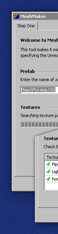
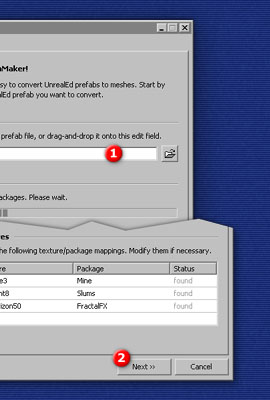
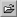
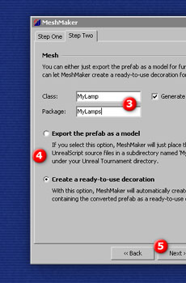
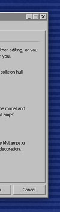
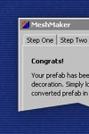
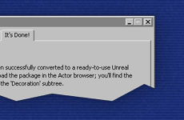

|
|  |

Welcome to MeshMaker!MeshMaker is a Windows-based editing tool for Unreal and Unreal Tournament that makes converting UnrealEd brushes to ready-to-use decoration actors a matter of seconds. This quick walkthrough assumes that you know how to make a prefab from a piece of level geometry. If you don't, follow the link. Step 1. Click the  Browse button and select the prefab you want to convert. Alternatively, you can drag-and-drop a prefab file from Explorer onto the MeshMaker window, or you can simply enter the file name. After you have selected the prefab file, MeshMaker will search all texture packages for the textures used by the prefab. This step is necessary because MeshMaker needs to know the size and package names of the textures used. Step 2. MeshMaker lists the names of the textures used by the prefab and the packages that contain them. A green check mark shows up next to each texture MeshMaker was able to find, and a red cross is displayed next to textures that couldn't be found in any of the texture packages.
The Status column in the texture listing displays in how many of the searched packages this texture was found. Normally, only a single package contains a given texture, so the Status column just shows "found." If, on the other hand, multiple packages contain a texture with the given name, MeshMaker picks the first one and shows "multiple" in the Status column; click on the texture or package name to preview all matching textures and to select the correct one. |
|
|

Step 3. In the Class field, specify an arbitary name (composed of letters, numbers and underscores; no blanks!) for the decoration actor MeshMaker will create, and enter the name of the package that will contain the new decoration in the Package field. Warning: If you specify an existing package, it will be silently overwritten. Check Generate collision hull to make the decoration solid. Step 4. Select an option:
MeshMaker exports the model anyway, regardless of whether you select one or the other option. The difference between the two just is that MeshMaker automatically compiles the package if you select Create a ready-to-use decoration. Step 5. Click Next to proceed. If you selected Create a ready-to-use decoration, MeshMaker will display a dialog box showing the progress of the compilation process; it usually takes just a couple of seconds to complete. |
 | |
|  |

Congrats, you're done!You just created your first decoration with MeshMaker. To use it in UnrealEd, open the Actor browser, and open the new package file that contains the decoration MeshMaker just compiled for you. After loading the package, your new decoration is listed in the "Decoration" subtree. Simply select it, right-click into any of UnrealEd's viewports and use Add MyPrefab (or whatever name you gave it) to add it to the world. |